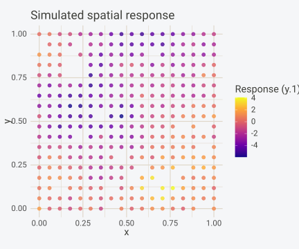
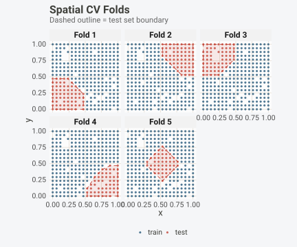
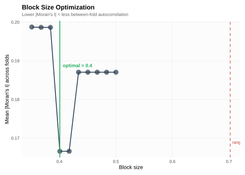
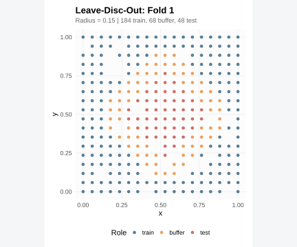
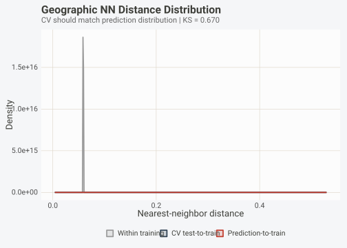
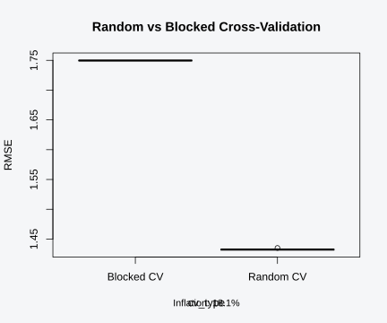
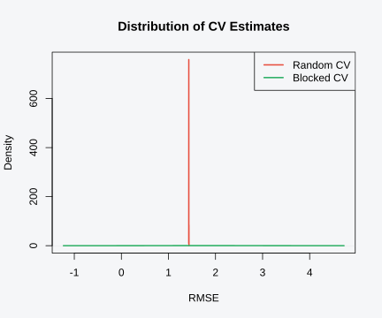

Installation
install.packages("pak") # development version
pak::pak("gcol33/BORG")Introduction
Cross-validation is the standard technique for estimating how well a model will perform on new data. The procedure is straightforward: split the data into folds, train on all but one, test on the held-out fold, and average. When the observations are independent, this works well. When they are not, the estimates can be dangerously wrong.
Spatial data is almost never independent. Nearby locations share climate, geology, land cover, and unmeasured environmental gradients. A measurement at one site carries information about its neighbours, which means that a test observation close to a training observation is partially known before prediction. Random cross-validation ignores this structure. It scatters observations into folds without regard for proximity, so training and test sets end up interspersed across the study area. The result: performance metrics that overestimate how well the model will actually predict at new, unvisited locations.
BORG provides a full set of spatial cross-validation strategies, from simple spatial blocking to distance-distribution matching. This vignette covers all of them and provides guidance on when to use each one. By the end, you will be able to diagnose whether your data requires spatial CV, select the right strategy for your prediction task, verify that your chosen strategy is well-calibrated, and produce the evidence that reviewers increasingly expect to see in any study involving spatially referenced data.
The problem: spatial autocorrelation
Spatial autocorrelation is the tendency for nearby observations to be more similar than distant ones. Far from a modelling artifact, it reflects the physical and ecological processes that generate spatial data. Temperature changes smoothly across a region. Species composition shifts gradually along elevation gradients. Soil properties vary at scales determined by parent material and topography. These patterns produce correlation structures that persist even after accounting for measured predictors.
The standard way to quantify global spatial autocorrelation is Moran’s I, which measures the degree of clustering in a variable relative to what would be expected under spatial randomness. Values near +1 indicate strong positive autocorrelation (nearby points are similar), values near 0 suggest no spatial pattern, and values near -1 indicate dispersion (nearby points are dissimilar). For ecological and environmental data, Moran’s I is almost always positive. BORG computes Moran’s I during diagnosis and uses it to detect spatial structure automatically.
The problem that autocorrelation creates for cross-validation is one of effective sample size. Consider 1,000 observations collected on a dense grid. If the autocorrelation range is 50 km and the study area spans 200 km, the effective number of independent observations might be closer to 100. Random cross-validation treats each observation as independent, which inflates the apparent amount of testing data. The training set already “knows” most of what the test set contains because nearby points leak information across the train-test boundary. Error estimates shrink, R-squared estimates swell, and the modeller concludes the model is better than it is.
Roberts et al. (2017) showed that this inflation can exceed 50% in realistic ecological modelling scenarios. The magnitude depends on the autocorrelation range relative to the study extent, the density of observations, and the signal-to-noise ratio. In the worst case, a model that has no real predictive skill at unvisited locations appears to perform well because it is being tested on data that is essentially a copy of its training set.
The fix is to create spatial separation between training and test data. If training and test observations are never closer than the autocorrelation range, the information leak is eliminated. The test set then reflects what the model would face at genuinely new locations, producing honest error estimates. This is what spatial cross-validation strategies are designed to achieve, and it is why BORG defaults to spatial blocking when it detects autocorrelation in your data.
Simulating spatial data
Before exploring CV strategies, we need data with known spatial
structure. borg_simulate() generates spatially
autocorrelated datasets where the true R-squared is known, which lets us
verify whether a CV strategy produces realistic performance
estimates.
sim <- borg_simulate(
n = 300,
type = "spatial",
n_predictors = 5,
signal_strength = 0.3,
autocorrelation = 0.7,
seed = 42
)
sim
#> BORG Synthetic Benchmark
#> Type: spatial
#> Observations: 300 | Predictors: 5
#> True R2: 0.3000 (signal_strength = 0.30)
#> Coordinates: x, y (autocorrelation = 0.70)Internally, 300 points are placed on a 2D grid with exponential
spatial covariance. Both the predictors (x1 through
x5) and the response are spatially autocorrelated,
controlled by the autocorrelation parameter. Higher values
produce smoother spatial fields where nearby points share more
information. The signal_strength parameter sets the
fraction of variance explained by the predictors, giving us a known
upper bound for model performance.
Note the column names in the simulated data:
names(sim$data)
#> [1] "x" "y" "x1" "x2" "x3" "x4" "x5" "y.1"Coordinate columns are x and y, and the
response is stored as y.1 because the coordinate column
y collides with the response variable y in
data.frame(). The sim$coords slot contains
c("x", "y"), so you pass those directly to BORG
functions.
Let us confirm the spatial structure with a quick diagnosis:
diag <- borg_diagnose(sim$data, coords = sim$coords, target = "y.1")
diag
#> BORG Dependency Diagnosis
#> =========================
#>
#> Dependency Type: SPATIAL
#> Severity: MODERATE
#> Recommended CV: spatial_block
#> Observations: 300
#>
#> --- Spatial Autocorrelation ---
#> Moran's I: 0.242 (p = 0.0000)
#> Range: 0.70 (data units)
#> Effective N: 266.8 (vs 300 actual)
#> Coordinates: x, y
#>
#> --- Estimated Random CV Bias ---
#> AUC inflation: ~6%
#> RMSE deflation: ~4%
#> Confidence: highBORG detects the spatial autocorrelation, reports Moran’s I, estimates the autocorrelation range, and recommends an appropriate CV strategy. The severity rating reflects how much random CV would inflate performance metrics.
We can visualize the spatial pattern in the response:
ggplot(sim$data, aes(x = x, y = y, color = y.1)) +
geom_point(size = 2, alpha = 0.8) +
scale_color_viridis_c(option = "C") +
coord_equal() +
labs(title = "Simulated spatial response",
color = "Response (y.1)") +
theme(panel.background = element_rect(fill = "transparent", colour = NA),
plot.background = element_rect(fill = "transparent", colour = NA),
legend.background = element_rect(fill = "transparent", colour = NA))
Smooth gradients like these are exactly what causes random CV to overestimate model performance. Nearby test points can be predicted from neighbouring training points even if the model has learned nothing about the underlying signal.
Because we created this data with signal_strength = 0.3
and autocorrelation = 0.7, the spatial pattern is strong
relative to the signal that predictors can explain. A perfect model
could achieve an R-squared of 0.3. Random CV would likely report
R-squared values above this ceiling, because the spatial leakage between
nearby train and test points artificially inflates the apparent fit.
Spatial CV will report lower values, but those values will be closer to
what the model would achieve at genuinely new locations.
Spatial block cross-validation
Spatial block CV is the default strategy BORG selects when it detects spatial autocorrelation. The approach partitions the study area into contiguous spatial blocks, then assigns entire blocks to folds. This ensures a spatial gap between training and test data, forcing the model to extrapolate across space rather than interpolate between nearby known points.
BORG implements spatial blocking through k-means clustering on coordinates. The number of clusters exceeds the number of folds, and clusters are assigned to folds in a balanced way (largest clusters first, assigned to the fold with the fewest observations). The block size is set to 1.5 times the estimated autocorrelation range by default, which ensures the spatial separation exceeds the range over which observations are correlated.
cv_spatial <- borg_cv(
sim$data,
coords = sim$coords,
target = "y.1",
v = 5
)
cv_spatial
#> BORG Cross-Validation
#> =====================
#>
#> Strategy: spatial_block
#> Folds: 5
#> Total obs: 300
#> Train sizes: 233 - 252 (mean: 240)
#> Test sizes: 48 - 67 (mean: 60)Check the strategy field to confirm that spatial
blocking was selected automatically. We can visualize the fold
structure:
autoplot(cv_spatial, type = "spatial", data = sim$data, coords = sim$coords)
Each fold occupies a distinct spatial region. The test set in any given fold is separated from the training data by at least the autocorrelation range, which removes the information leakage that random CV allows.
To force spatial blocking regardless of what the diagnosis
recommends, pass the strategy argument explicitly:
cv_explicit <- borg_cv(
sim$data,
coords = sim$coords,
target = "y.1",
strategy = "spatial_block",
v = 5,
block_size = 0.15
)
cv_explicit
#> BORG Cross-Validation
#> =====================
#>
#> Strategy: spatial_block
#> Folds: 5
#> Total obs: 300
#> Train sizes: 239 - 243 (mean: 240)
#> Test sizes: 57 - 61 (mean: 60)Setting block_size manually gives you direct control
over the spatial separation between folds. Larger blocks create wider
gaps at the cost of potentially unequal fold sizes, while smaller blocks
increase the risk of autocorrelation leakage.
A spatial buffer can be added to any blocking strategy. The
buffer argument in borg_cv() removes training
points within a specified distance of any test point, creating a spatial
gap even within blocks that share a boundary, serving as a
lighter-weight alternative to full leave-disc-out CV:
cv_buffered <- borg_cv(
sim$data,
coords = sim$coords,
target = "y.1",
strategy = "spatial_block",
buffer = 0.1,
v = 5
)
# Check how many training points remain per fold
train_sizes <- vapply(cv_buffered$folds, function(f) length(f$train), integer(1))
cat("Train sizes with buffer:", paste(train_sizes, collapse = ", "), "\n")
#> Train sizes with buffer: 216, 218, 218, 228, 215Buffering within spatial blocks gives you a middle ground between standard blocking (which may still have some leakage at block boundaries) and leave-disc-out (which can exclude too much data).
Block size optimization
Block size is not arbitrary. Too small, and nearby autocorrelated points end up in different folds, reintroducing the very leakage you are trying to prevent. Too large, and you waste data by creating folds with very few test observations. The right size depends on the autocorrelation range.
borg_block_size() tests a range of candidate block sizes
and selects the one that minimizes residual spatial autocorrelation
between CV folds. For each candidate size, it generates spatial block
folds, computes Moran’s I on the test-set residuals within each fold,
and averages across folds. The optimal block size is the one where the
mean absolute Moran’s I is lowest (and no folds are empty).
opt <- borg_block_size(
sim$data,
coords = sim$coords,
target = "y.1",
v = 5,
n_sizes = 10,
verbose = FALSE
)
opt$optimal
#> [1] 0.4007399
opt$range_estimate
#> [1] 0.7022196By default, the search range spans 0.5x through 3x the variogram
range estimate, covering plausible block sizes. You can override this
with the range argument if you have domain knowledge about
the appropriate scale.
Visualize the optimization curve:
autoplot(opt)
In the plot, the green vertical line marks the optimal block size. A red dashed line shows the variogram-based range estimate for reference. Point size encodes the mean test set size, so you can see the trade-off between spatial separation and data efficiency.
When the optimal block size is much larger than the range estimate, it indicates that the predictors themselves are spatially structured and that the range computed from the response alone underestimates the relevant spatial scale. When the optimal is smaller than the range estimate, it may indicate that the response is spatially smooth but the prediction task is relatively local.
If you have a model formula, you can pass it to
borg_block_size() to evaluate residual autocorrelation
rather than raw-value autocorrelation:
opt_resid <- borg_block_size(
sim$data,
coords = sim$coords,
target = "y.1",
v = 5,
n_sizes = 10,
formula = y.1 ~ x1 + x2 + x3 + x4 + x5
)
opt_resid$optimal
#> [1] 0.4007399Using the residual-based approach can give a tighter range estimate because the model explains some of the spatial pattern, reducing the apparent autocorrelation.
Alternative spatial CV strategies
Spatial block CV with k-means is the default, but BORG offers several alternative strategies. Each addresses a different aspect of the spatial prediction problem.
Environmental blocking
Environmental blocking partitions observations by their environmental similarity rather than geographic proximity. It runs PCA on the environmental covariates, clusters the PC scores with k-means, and assigns clusters to folds, which is particularly useful when the goal is to predict in environmentally novel conditions, because it ensures the test set occupies a region of environmental space not represented in training.
env_data <- sim$data[, c("x1", "x2", "x3", "x4", "x5")]
cv_env <- borg_cv(
sim$data,
coords = sim$coords,
target = "y.1",
env = env_data,
strategy = "environmental_block",
v = 5
)
cv_env
#> BORG Cross-Validation
#> =====================
#>
#> Strategy: environmental_block
#> Folds: 5
#> Total obs: 300
#> Train sizes: 239 - 241 (mean: 240)
#> Test sizes: 59 - 61 (mean: 60)Environmental blocking is the right choice when the prediction domain spans a wider environmental range than the training data. If your model needs to predict at new locations that differ environmentally from sampled sites, random spatial blocking may still underestimate prediction error because the test set shares the same environmental niche as the training data.
What distinguishes environmental from geographic blocking is what gets separated. Geographic blocks keep spatially proximate points together, so each fold tests the model on a different region. Environmental blocks keep environmentally similar points together, so each fold tests the model on a different set of environmental conditions. For species distribution models projected under climate change, this matters a great deal: the model needs to generalize to temperature and precipitation combinations it has not seen, not just to new geographic coordinates within the same climate envelope.
Leave-disc-out (buffered spatial CV)
borg_disc_cv() takes a different approach. It first
creates spatial folds via k-means blocking, then removes all training
points within a radius of any test point. These excluded points form a
buffer zone that eliminates spatial autocorrelation leakage more
aggressively than standard blocking.
cv_disc <- borg_disc_cv(
sim$data,
coords = sim$coords,
target = "y.1",
radius = 0.15,
v = 5,
verbose = FALSE
)
cv_disc
#> BORG Leave-Disc-Out Cross-Validation
#> =====================================
#>
#> Folds: 5 (of 5 requested)
#> Exclusion radius: 0.15
#> Mean points excluded per fold: 39 (21.0%)
#> Effective training fraction: 61.3% - 71.7%Set the radius parameter to control the exclusion
buffer. If you leave it NULL, BORG auto-detects the
autocorrelation range from the data. The trade-off is clear: larger
radii produce more conservative (and honest) estimates but reduce the
effective training set size. If the radius is too large relative to the
study extent, folds may be dropped because insufficient training data
remains.
Visualize a single fold to see the buffer zone:
autoplot(cv_disc, data = sim$data, coords = sim$coords, fold = 1)
Points colored as “buffer” are excluded from training. They are too close to the test set to be considered independent but are not used for testing either. A three-way partition (train / buffer / test) is more conservative than two-way spatial blocking, where points adjacent to the block boundary still appear in training.
Buffered leave-one-out
For small datasets or when maximum spatial rigor is needed,
borg_spatial_loo() holds out one observation at a time and
removes all training points within a buffer distance, the spatial
analogue of standard leave-one-out CV.
loo <- borg_spatial_loo(
sim$data,
coords = sim$coords,
buffer = 0.15
)
loo
#> BORG Buffered Leave-One-Out CV
#> Observations: 300 | Iterations: 300
#> Buffer distance: 0.1500
#> Excluded per iteration: 16.3 (mean), 6-20 (range)
#> Effective train size: 283 (mean)With 300 observations, this creates 300 iterations. For large
datasets, use the max_iter argument to subsample:
loo_sub <- borg_spatial_loo(
sim$data,
coords = sim$coords,
buffer = 0.15,
max_iter = 50,
seed = 42
)
cat("Iterations:", loo_sub$n_iter, "\n")
#> Iterations: 50
cat("Mean excluded:", round(mean(loo_sub$n_excluded), 1), "\n")
#> Mean excluded: 16.4
cat("Mean effective train:", round(mean(loo_sub$effective_train_size), 0), "\n")
#> Mean effective train: 283Inspect the n_excluded vector to see how many training
points were removed per iteration. If the mean exclusion count is a
large fraction of the dataset, the buffer may be too wide for the data
density.
Spatial+ CV
Spatial+ (Wang et al. 2023) is a two-stage approach. Stage 1 creates spatial blocks through hierarchical clustering. Stage 2 adjusts the fold assignment so that each fold’s environmental coverage is representative of the full dataset. This avoids the problem where purely geographic blocks create folds that are environmentally biased.
cv_splus <- borg_cv(
sim$data,
coords = sim$coords,
target = "y.1",
strategy = "spatial_plus",
v = 5
)
cv_splus
#> BORG Cross-Validation
#> =====================
#>
#> Strategy: spatial_plus
#> Folds: 5
#> Total obs: 300
#> Train sizes: 0 - 300 (mean: 240)
#> Test sizes: 0 - 300 (mean: 60)Spatial+ automatically uses all numeric non-coordinate columns as the
environmental variables for balancing. You can also provide explicit
environmental data through the env argument if your
environmental covariates differ from your predictors.
KNNDM
K-Nearest Neighbour Distance Matching (Linnenbrink et al. 2024) takes a fundamentally different approach: instead of blocking by geography, it optimizes fold assignments so that the nearest-neighbour distance distribution between training and test data matches the distance distribution between training data and the actual prediction locations. This is the right choice when your prediction locations are known in advance and differ systematically from your sampling locations.
# Create prediction points spread across a wider domain
pred_points <- data.frame(
x = runif(100, -0.2, 1.2),
y = runif(100, -0.2, 1.2)
)
cv_knndm <- borg_cv(
sim$data,
coords = sim$coords,
target = "y.1",
prediction_points = pred_points,
strategy = "knndm",
v = 5
)
cv_knndm
#> BORG Cross-Validation
#> =====================
#>
#> Strategy: knndm
#> Folds: 5
#> Total obs: 300
#> Train sizes: 240 - 240 (mean: 240)
#> Test sizes: 60 - 60 (mean: 60)KNNDM iteratively swaps observations between folds to minimize the Kolmogorov-Smirnov statistic between the CV distance distribution and the prediction distance distribution. When prediction locations are far from training data (as in spatial extrapolation tasks), this produces more pessimistic but more realistic performance estimates than standard spatial blocking.
Prediction locations are the critical input. If you are producing a
wall- to-wall map over a regular grid, pass that grid as
prediction_points. If you are predicting at specific
monitoring sites, pass those site coordinates. KNNDM quality depends
entirely on how well the prediction locations represent the actual
prediction task. Passing an incorrect or incomplete set of prediction
locations can produce CV estimates that are worse than standard spatial
blocking.
Distance distribution matching
KNNDM’s core idea leads to a general diagnostic: are the distances
between CV test and training data representative of the distances
between prediction locations and training data?
borg_geodist() computes these distributions and tests
whether they match.
gd <- borg_geodist(
sim$data,
folds = cv_spatial,
prediction_points = pred_points,
coords = sim$coords,
type = "geo"
)
gd
#> BORG Distance Distribution Diagnostic
#> Geographic: CV median=0.17, Prediction median=0.03, KS=0.670A KS statistic measures the maximum difference between the CV and prediction distance distributions. Values close to 0 indicate good matching; large values suggest the CV is not representative of the prediction task.
Visualize the distributions:
autoplot(gd, space = "geo")
Three curves appear: within-training nearest-neighbour distances (the reference), CV test-to-train distances, and prediction-to-train distances. When the CV curve (dark blue) overlaps the prediction curve (red), the CV is well-calibrated for the prediction task. When they diverge, the CV either overestimates or underestimates prediction difficulty.
Feature-space distances are available by setting
type = "both" or type = "feature":
gd_both <- borg_geodist(
sim$data,
folds = cv_spatial,
prediction_points = pred_points,
coords = sim$coords,
predictors = c("x1", "x2", "x3"),
type = "both"
)
cat("KS (geographic):", round(gd_both$ks_geo, 3), "\n")
#> KS (geographic): 0.67
cat("KS (feature): ", round(gd_both$ks_feature, 3), "\n")
#> KS (feature): NALarge feature-space KS values indicate that the CV test sets are environmentally closer to training data than the prediction locations are. Prediction extending into novel environmental conditions not captured by geographic blocking alone.
As a post-hoc check, the geodist diagnostic is most useful after selecting a CV strategy. Run it after generating your folds to verify that the CV is actually testing the model under conditions similar to the prediction task. If the KS statistic is large (above 0.3 is a reasonable threshold), consider switching to KNNDM or environmental blocking, or adjusting the block size to better match the prediction distances. The diagnostic does not tell you which strategy to use, but it tells you whether your current strategy is appropriate for the prediction problem you have defined.
Comparing random vs blocked CV
Run both random and blocked CV on the same data and compare the
resulting metrics. borg_compare_cv() does exactly this. It
fits a model under each CV scheme, repeats the comparison multiple times
for stability, and runs a paired t-test to determine whether the
difference is statistically significant.
comparison <- borg_compare_cv(
sim$data,
formula = y.1 ~ x1 + x2 + x3 + x4 + x5,
coords = sim$coords,
metric = "rmse",
v = 5,
repeats = 10,
seed = 42,
verbose = FALSE
)
comparison
#> CV Comparison Results
#> =====================
#>
#> Metric: rmse
#> Random CV: 1.4327 (SD: 0.0008)
#> Blocked CV: 1.7497 (SD: 0.0000)
#>
#> Inflation: 18.1% deflated***
#> p-value: 9.606e-25 (paired t-test, n=10 repeats)
#>
#> Random CV significantly deflates rmse estimates.Reported values include the mean metric under random and blocked CV, the estimated inflation (as a percentage), and the p-value from the paired test. For spatially autocorrelated data with moderate signal strength, you will typically see random CV producing lower RMSE (or higher R-squared) than blocked CV. The difference is the metric inflation caused by autocorrelation leakage.
Visualize the comparison:
plot(comparison, type = "boxplot")
Each box shows the distribution of metric values across repeats. Non-overlapping boxes indicate that the inflation is both statistically and practically significant, providing direct evidence for reviewers that the choice of CV strategy matters for this dataset.
A density plot provides another view:
plot(comparison, type = "density")
Separation between the red (random) and green (blocked) curves
quantifies how misleading random CV would be. For the simulated data
with autocorrelation = 0.7 and
signal_strength = 0.3, the inflation is typically large,
because the spatial pattern in the response is strong relative to the
signal that the predictors can explain.
To understand how the inflation scales, you can generate independent data (no spatial structure) and repeat the comparison:
sim_ind <- borg_simulate(
n = 300,
type = "independent",
signal_strength = 0.3,
seed = 123
)
# For independent data, BORG defaults to random CV
# We force both approaches with allow_random = TRUE
cv_ind <- borg_cv(
sim_ind$data,
target = "y",
allow_random = TRUE,
v = 5
)
cat("Strategy for independent data:", cv_ind$strategy, "\n")
#> Strategy for independent data: randomWith independent data, random and blocked CV should give similar results because there is no autocorrelation to exploit. This sanity check confirms that spatial blocking does not introduce unnecessary pessimism when the data are genuinely independent.
borg_compare_cv() goes beyond diagnosing your own data.
When responding to reviewers, the side-by-side comparison provides
concrete evidence that the choice of CV strategy affects reported
metrics for your specific dataset. A reviewer who asks “why not use
standard 10-fold CV?” can be answered with a plot showing the inflation
and a p-value confirming it is not due to chance. A dataset-specific
result is far more convincing than citing a methods paper arguing that
spatial CV is important in general.
Practical guidance
Choosing a spatial CV strategy
The right strategy depends on three things: the prediction task (interpolation vs extrapolation), the data geometry (clustered vs dispersed, regular vs irregular), and whether the prediction locations are known in advance. No single strategy dominates; each trades off bias, variance, and computational cost in a different way. The decision tree below covers the most common scenarios.
Default: spatial block CV. Start here. K-means
spatial blocking is appropriate for most ecological and environmental
modelling tasks where the goal is to predict at new locations within the
study area. It handles irregular point patterns well and balances fold
sizes automatically. Use borg_cv() without specifying a
strategy, and let BORG select the blocking approach based on the
diagnosed spatial structure.
When you have prediction locations: KNNDM. If the locations where you need predictions are known (e.g., a grid covering a national park, or sites planned for future sampling), KNNDM tailors the CV to match the actual prediction task, especially when prediction locations are spatially biased relative to training data, for example when training data clusters in accessible areas but predictions are needed everywhere.
When environmental extrapolation matters: environmental blocking. If your concern is whether the model generalizes to new environmental conditions (not just new geographic locations), environmental blocking is the appropriate choice for species distribution models that will be projected to future climate scenarios, because the model needs to predict outside its training environmental envelope.
When you want maximum conservatism: leave-disc-out.
The buffer zone in borg_disc_cv() and
borg_spatial_loo() provides the strongest guarantee against
autocorrelation leakage. Use this when the study has high spatial
density (many points close together) or when the autocorrelation range
is uncertain. The cost is reduced effective sample size.
When you have repeated measurements at sites:
leave-location-out. If the same locations were sampled multiple
times (e.g., long-term monitoring plots), use
strategy = "leave_location_out" to ensure no location
appears in both training and test, a special case of group CV where the
groups are defined by spatial coordinates.
When space and environment both matter: Spatial+. Use this when you suspect that geographic blocks create environmentally unbalanced folds. It adjusts the fold assignment to maintain environmental representativeness within each fold while still respecting spatial structure.
Rules of thumb
Minimum sample size. Spatial blocking reduces the effective number of independent test observations. With 5 folds and strong autocorrelation, you need at least 150-200 points for stable estimates; below 50 points, consider buffered leave-one-out instead of fold-based CV.
Block size. If you skip
borg_block_size(), the default is 1.5 times the variogram
range estimate, usually adequate. If you have domain knowledge about the
relevant spatial scale (e.g., the home range of a species, the extent of
a soil type), use that instead. The block size should be at least as
large as the autocorrelation range; anything smaller fails to break the
autocorrelation link between folds.
Buffer distance. For borg_disc_cv() and
borg_spatial_loo(), the buffer should match the
autocorrelation range. BORG estimates it from the variogram if you do
not provide it. Be cautious with very large buffers: if more than 50% of
training data is excluded, the fold may be dropped entirely.
Number of folds. Five is the standard default, balancing bias and variance. More folds (10) reduce bias at the cost of higher variance; fewer folds (3) are appropriate when the study area is small relative to the autocorrelation range.
Repeats. Spatial block CV results can vary with the
random seed used for k-means clustering. Use repeats = 5 or
repeats = 10 in borg_compare_cv() for stable
estimates, and set repeats > 1 in borg_cv()
to generate multiple fold sets and average across them.
When NOT to use spatial CV
Spatial CV is not always the answer. There are situations where standard random CV is appropriate even when the data has spatial coordinates.
Interpolation tasks. If the explicit goal is to predict at locations between known sites (e.g., gap-filling in a sensor network), random CV correctly mimics the prediction task. Spatial blocking would be overly pessimistic because it forces the model to extrapolate when the real task is interpolation.
Dense, regular grids with short-range
autocorrelation. If the study area is large relative to the
autocorrelation range and the sampling grid is dense, the bias from
random CV may be negligible. Check with borg_compare_cv()
and if the inflation is under 5%, the practical impact is small.
Feature-dominated predictions. When the predictors fully explain the spatial pattern (no residual spatial autocorrelation), spatial blocking does not change the results. Check the diagnosis: if Moran’s I of model residuals is near zero, the spatial structure is captured by the features and random CV is safe.
Small datasets where spatial blocking would leave too few test points. With fewer than 30 observations and a large autocorrelation range, spatial blocking may produce folds with 2-3 test observations each, yielding unreliable metric estimates. In this case, buffered LOO is preferable, or you may need to accept that the dataset is too small for reliable validation.
In all these cases, you can use allow_random = TRUE in
borg_cv() to override the automatic blocking. BORG will
issue a warning with the estimated inflation so you make the decision
with full information.
A practical workflow
Putting it all together, here is a workflow for spatial model validation:
-
Diagnose. Run
borg_diagnose()on your data to detect spatial autocorrelation, estimate the range, and get a recommended CV strategy. -
Generate folds. Call
borg_cv()and let the diagnosis guide the strategy. For most projects, the default spatial blocking is sufficient. -
Optimize block size (optional). If you want to
fine-tune, use
borg_block_size()to find the block size that minimizes residual autocorrelation. -
Compare. Run
borg_compare_cv()at least once to quantify the inflation from random CV. This number belongs in your methods section. -
Check calibration. Use
borg_geodist()to verify that the CV test-to- train distances match the prediction-to-train distances. If they do not, consider KNNDM or environmental blocking. - Report. Include the CV strategy, the block size or buffer distance, the inflation estimate from the comparison, and the geodist KS statistic. These four pieces of information let readers assess whether your reported metrics are trustworthy.
A few extra lines in a standard modelling pipeline, the information produced can mean the difference between a model that performs as advertised in production and one that silently underperforms.
References
Roberts, D.R., et al. (2017). Cross-validation strategies for data with temporal, spatial, hierarchical, or phylogenetic structure. Ecography, 40(8), 913-929. doi:10.1111/ecog.02881
Meyer, H., & Pebesma, E. (2022). Machine learning-based global maps of ecological variables and the challenge of assessing them. Nature Communications, 13, 2208. doi:10.1038/s41467-022-29838-9
Linnenbrink, J., et al. (2024). kNNDM: k-fold nearest neighbour distance matching cross-validation for map accuracy estimation. Methods in Ecology and Evolution. doi:10.1111/2041-210X.14369
Wang, Y., Li, W., Zhang, Z., & Ding, J. (2023). A Spatial+ framework for cross-validation of spatial prediction models. International Journal of Applied Earth Observation and Geoinformation, 121, 103364. doi:10.1016/j.jag.2023.103364
Valavi, R., Elith, J., Lahoz-Monfort, J.J., & Guillera-Arroita, G. (2019). blockCV: An R package for generating spatially or environmentally separated folds for k-fold cross-validation of species distribution models. Methods in Ecology and Evolution, 10, 225-232. doi:10.1111/2041-210X.13107